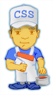

Introdução
Folhas de estilos em cascata — Cascading Style Sheets (CSS) — é uma ferramenta fantástica para construção do layout dos seus websites. Permite que você projete websites com uma técnica completamente diferente da convencional e possibilita uma considerável redução de tempo de trabalho. Conhecer CSS é uma necessidade para qualquer um envolvido com o projeto web.
Este tutorial iniciará você nas CSS em algumas poucas horas. É fácil de entender e ensinará a você todas as técnicas sofisticadas.
Aprender CSS é divertido. À medida em que você for progredindo no tututorial não esqueça de dedicar algum tempo para fazer seus experimentos com o que for aprendendo em cada lição.
Para usar CSS é necessário um conhecimento básico de HTML. Se você não está familiarizado com HTML, consulte nosso tutorial HTML antes de começar com CSS.
Quais softwares eu precisarei?
Por favor, evite usar softwares tais como FrontPage, DreamWeaver ou Word para acompanhar este tutorial. Softwares avançados não facilitarão seu aprendizado de CSS. Ao contrário, eles colocarão limites para você e atrasarão seu aprendizado.
Tudo o que você precisa é de um simples e gratuito editor de texto.
Por exemplo, Microsoft Windows vem com um programa chamado Notepad. Normalmente este programa está no diretório Accessories no menu Start => Programs. Alternativamente você pode usar um editor de texto similar, tal como, Pico para Linux ou Simple Text para Macintosh.
Um editor de texto simples é o ideal para o aprendizado de HTML e de CSS porque eles não afetam e nem modificam o código que você digita. Assim os acertos e erros de codificação devem-se exclusivamente a você — não ao software que você utiliza.
Você pode usar qualquer navegador parta acompanhar este tutorial. Nós aconselhamos que você mantenha seu navegador sempre atualizado e utilize a última versão disponível.
Um navegador e um editor de textos simples é tudo o que você precisa.
Vamos começar!